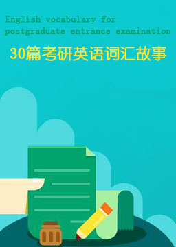

考研英语词汇故事 (English vocabulary for postgraduate entrance examination)
作者：未知 (unknow) [中国]
词汇是语言学习的基石。从传统上来讲，学生记单词的方法不仅单调乏味，而且效率极低，很多单词背的时候费了九牛二虎之力，用的时候还是一头雾水。有鉴于此，我们想提供给大家一种新的学习词汇的方法——用一些风趣幽默的小故事把一些看似毫无关系的词串连起来。这样记单词不仅简单方便，而且妙趣横生。
难度：
大学
长度：
短篇
分类：
社会
第一篇: 许可证 The Permit
第三篇: 永恒的照片 Timeless Photographs
第三篇: 我的爱情故事 The Story of My Romance
第四篇: 大汤姆 Big Tom
第五篇: 杰森和杰夫 Jason and Jeff
第六篇: 女人的痛苦 A Woman's Distress
第七篇: 当值 On Duty
第八篇: 月亮公主 The Moon Princess
第九篇: 文化的意义 Meaning of Culture
第十章: 两个陌生人 Two Strangers
第十一篇: 爱德华和他不可思议的黑洞 Edward and His Incredible Black Hole
第十二篇: 消磨时间 Killing Time
第十三篇: 一天晚上 One Evening
第十四篇: 今日信息系统 Information Systems Today
第十五篇: 门前的恩惠 A Favor at the Gates
第十六篇: 当阴影降临 When Shadows Fall
第十七章: 拯救环境 Saving the Environment
第十八篇: 玫瑰 Roses
第十九篇: 骑士勋章（1） Knights Honor (1)
第二十篇: 骑士勋章（2） Knights Honor (2)
第二十一篇: 完美的圣诞树 The Perfect Christmas Tree
第二十二篇: 带着飘落的雪来 Come with Falling Snow
第二十三篇: 海难 The Shipwreck
第二十四篇: 一位教师深入中国 A Teacher Goes Deep into China
第二十五篇: 互联网 Internet
第二十六篇: 媒体报道 Media Coverage
第二十七篇: 怪异的事故 The Freak Accident
第二十八篇: 死亡谷 Death Valley
第二十九篇: 企业：如何更有效地服务社会 Business: How to Serve the Society More Efficiently
第三十篇: 关于电话的一些事情 Something about Telephone